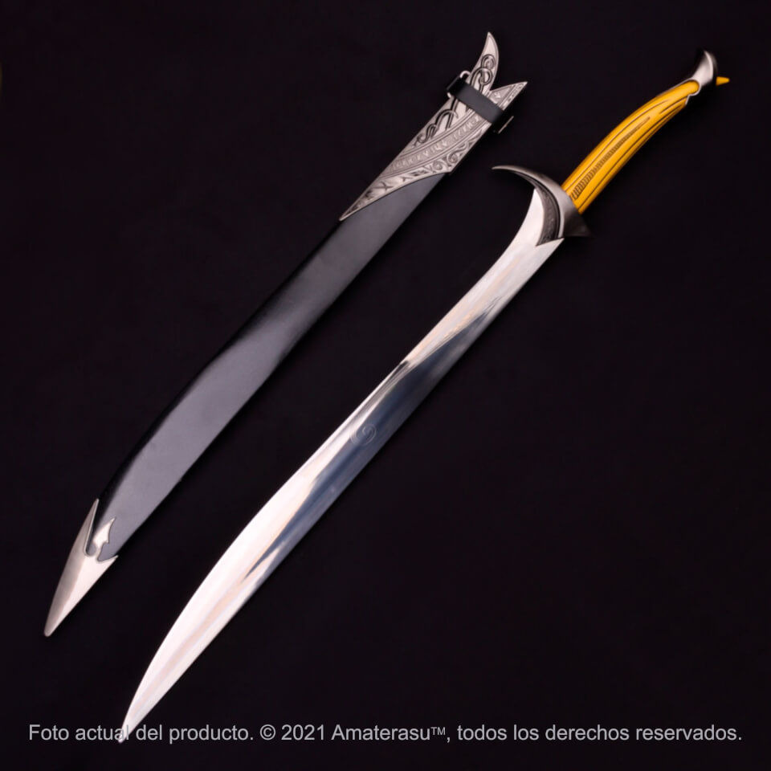

Espada Orcrist

Orcrist es la espada de Thorin que fue forjada en el antiguo reino de Gondolin, que fue encontrada por Thorin y la compañia tras haber derrotado a los 3 trolls en el bosque de los Trolls que las guardaba en su guarida. Esta espada es conocida como la Hendedora de Trasgos y también llamada como "Mordedora" por los mismos trasgos. Se cree que Orcrist fue empuñada por Ecthelion de la Fuente. Éste falleció luchando contra Gothmog, y Orcrist se perdió en la anegación de Beleriand. No se sabe cómo la encontraron Tom, Berto y Guille, los tres trolls.
La espada tiene casi un metro de largo. Una inscripción rúnica está grabada en la hoja de acero inoxidable. La empuñadura está hecha de piezas metálicas sólidas, piedras preciosas de imitación y un agarre de resina acrílica moldeada. Incluye una placa decorativa de pared de madera y un certificado de autenticidad. Detalles: Longitud total: 98,5 cm aprox. Longitud de la hoja: 65,5 cm aprox. Material de la cuchilla: acero inoxidable AUS-6 Material del mango: resina acrílica. Incluye una placa decorativa de exhibición de madera Incluye certificado de autenticidad.
$500
Proceso de creación
A continuación, les dejamos un video sobre el proceso de creación de ésta espada hecha por nuestros herreros.